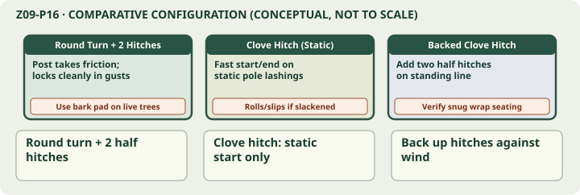

Z09-P16 · Tools and construction · New manuscript
Tie a clove hitch and round turn with two half hitches
Choose the right post-attachment hitch depending on whether tension stays steady or fluctuates in wind.
When it applies · Anchoring tarp ridgelines, camp utility lines and lashings to sound posts or lawful deadwood anchors.
Equipment · Utility cordage and sound anchor post (use wide bark protection on live trees where lawful).

Actions
- Use a round turn and two half hitches when tying off a ridgeline under variable wind or load—the full wrap around the post takes the friction load cleanly while two half hitches lock the tail without binding.[K09, ED]
- Reserve a clove hitch primarily for starting/ending static pole lashings or quick temporary holds under steady pull—clove hitches can roll and slip open on smooth posts when tension goes slack and re-loads.[K09, ED]
- Lock any clove hitch exposed to shifting gusts with two half hitches on the standing part so the binding cannot unwind overnight.[K09, E16, ED]
Failure recognition · Tying an un-backed clove hitch to a smooth wet sapling or tent pole in gusty wind, watching the hitch spill loose mid-storm.[K09, E16]
Verify · Confirm full friction wrap seating, properly oriented half hitches forming a clean clove on the standing line and zero slack slip under hand tug.[K09, ED]
Stop or change course · Avoid tying tight thin cords directly into soft living tree bark where prohibited; use wide webbing straps or lawful deadwood anchors instead.[K11, E22]
Evidence and editorial notes
- E16 · NWS · Wind Safety (current web edition)
- Section: Wind Safety > High Wind Hazards · Conditions: Forecast or developing high winds, squalls, or straight-line winds
Support: High winds topple trees, loft debris, and stress lightweight shelters beyond fabric and anchor limits; relocate out of timbered fall zones and into substantial shelter before gusts peak.
Limitations: Tents and tarps lack standardized wind-speed survival guarantees across soil types and pitch angles. · Conflicting evidence: None; avoids unvalidated mph ratings for improvised pitches.
Editorial note: Drives high-wind shelter inspection, guying limits, and abandonment thresholds. · Specialist reviewer: Weather safety and shelter equipment
Primary source · checked 2026-11-24 - E22 · NPS · Leave No Trace Seven Principles (current web edition)
- Section: Principle 2 > Travel and Camp on Durable Surfaces · Conditions: Campsite selection and shelter setup on public lands
Support: Pitch shelters on established pads, rock, gravel, dry grass, or snow rather than fragile meadows or saturated shorelines; do not alter terrain or cut live vegetation for shelter frames.
Limitations: Deadfall shelter construction is inappropriate in high-use or protected zones except genuine life-safety emergencies. · Conflicting evidence: Restricts destructive improvised shelter building during routine trips.
Editorial note: Separates lawful low-impact practice from emergency improvised cover. · Specialist reviewer: Land management and wilderness ethics
Primary source · checked 2026-11-24 - K09 · USDA Forest Service · Handtools for Trail Work (0523-2810-MTDC) (agency handbook)
- Section: Cordage, Anchors and Rigging Boundaries · Conditions: Non-life-safety camp lashing, tarps, haul lines and tie-downs
Support: Cordage strength drops significantly at knots, sharp bends, wet fibers, UV exposure and abrasion; inspect fibers before loading and never use unrated camp cord or improvised bindings for life-safety suspension or climbing.
Limitations: No universal breaking strength applies to natural plant fibers or weathered salvaged rope. · Conflicting evidence: Counters folklore claims equating improvised cordage to rated climbing rope.
Editorial note: Separates camp utility lashing/hauling from life-safety rigging. · Specialist reviewer: Rigging safety and materials mechanics
Primary source · checked 2026-11-24 - K11 · NPS · Leave No Trace Seven Principles (current web edition)
- Section: Principle 2 and 5 > Low-Impact Construction and Material Use · Conditions: Temporary camp craft and emergency construction on public lands
Support: Avoid cutting live saplings, nailing into live trees or building permanent structures on public lands; dismantle temporary non-destructive lashings and leave natural features intact.
Limitations: Life-safety emergencies differ from routine camp practice but still require hazard-free builds. · Conflicting evidence: Restricts destructive bushcraft construction in routine recreation.
Editorial note: Distinguishes lawful low-impact knots/lashings from destructive camp building. · Specialist reviewer: Land management and wilderness ethics
Primary source · checked 2026-11-24
Source lineage · USFS cordage and camp utility knots; new manuscript · Classification · New manuscript.